2×2×2 Cube Solving
Solve a 2×2×2 Rubik's cube scrambled with R' F U2 using one hand, keep it in the hand and hold it solved.
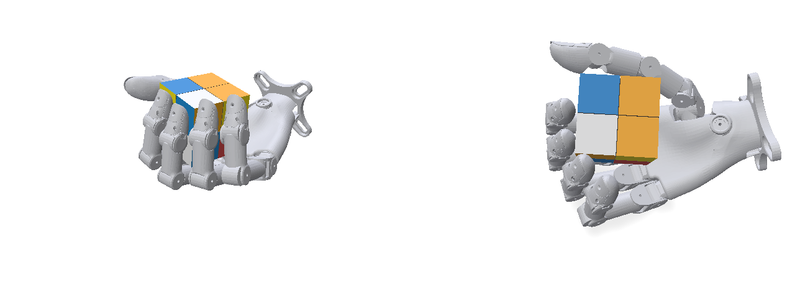
Target environment at episode start (two fixed camera views; the same views as the feedback videos)
Task
Task: One-handed 2×2×2 Rubik's Cube Solving
Your goal is to reproduce the dexterous manipulation skill demonstrated in the given human video using the Wuji Hand 2 in simulation and successfully execute it in the provided target environment.
The task is to solve a scrambled 2×2×2 cube by turning its layers with the hand only, keep it in the hand throughout, and hold it solved.
- Human video:
demo/ - Target environment:
target/screenshot.png - Success criteria:
SUCCESS.md
Cube Conventions
- Faces at the start: U faces world +Z (up), F faces the fingertips (world −X), R faces world −Y (little-finger side), L the thumb side, D the palm, B the wrist. Face names are fixed by this start orientation; the cube may be reoriented freely afterwards.
- Solved colours: U white, D yellow, F green, B blue, R red, L orange.
- Moves (WCA): X = 90° clockwise looking at face X from outside, X2 = 180°, X' = 90° counterclockwise. A 2×2×2 has no fixed centres: L equals R' plus a whole-cube rotation; likewise D = U' and B = F'.
- Scramble: fixed for every evaluation of this research round: R' F U2, encoded
[[1, 3], [2, 1], [0, 2]](face 0 = U, 1 = R, 2 = F; quarter_turns 1 = X, 2 = X2, 3 = X'). Applying the moves in order to a solved cube held in the start orientation gives the start state shown intarget/screenshot.png. The policy receives it in every observation asobs["scramble"](CONTRACT.md).
Success criteria and progress rubric
Success Criteria: One-handed 2×2×2 Rubik's Cube Solving
Complete the stages within 40 s (20000 steps at 500 Hz). Total progress score: 0–1.
A layer turn is complete when the turned layer is aligned again (within about 10°) a quarter or half turn from where it started. Distance to solved is the smallest number of face turns that solves the cube (a 180° turn counts as one); the start state is 3 turns from solved, and the policy receives the scramble in every observation (CONTRACT.md). Solved means every face shows one colour and every layer is aligned: any two cubies' orientations differ by less than 10°, whatever the whole cube's orientation.
1. First turn (0–0.15)
- 0: No layer turned.
- 0.05: A layer rotated ≥ 45° about its axis.
- 0.15: One complete layer turn.
2. Turning (0–0.15)
- 0: Fewer than two complete layer turns.
- 0.05: Two complete layer turns.
- 0.15: Three or more complete layer turns.
3. Solving (0–0.50)
- 0: Distance to solved never below 3.
- 0.15: Distance to solved reaches 2.
- 0.30: Distance to solved reaches 1.
- 0.50: The cube is solved at some moment.
4. Hold (0–0.20)
- 0: Not solved at the end.
- 0.10: Solved and touching the hand at the final step.
- 0.20: Solved throughout the final 1.0 s and touching the hand at the final step.
All milestones require the cube retained and intact up to that moment: it touches nothing but the hand, its centre never drops more than 5 cm below its step-0 height, and the cubies are never forced more than 15° away from a configuration the mechanism allows (all layers aligned, or exactly one layer part-way through a turn).
Scoring: Stage scores are additive; award the highest satisfied milestone per stage. Stages 1 and 2 count every complete layer turn, solving or not. Stage 3 requires Stage 1 complete but not Stage 2, and scores the smallest distance reached at any moment. Stage 4 requires Stage 3 complete. Reorienting the whole cube in the hand is allowed and is not a turn. Examples: one wrong turn 0.15; one correct turn 0.30; two correct turns 0.50; solved and held to the end 1.0.
Official success: Score = 1.0, with all physical, hardware, and runtime requirements satisfied in every required evaluation trial.
Demonstration frames
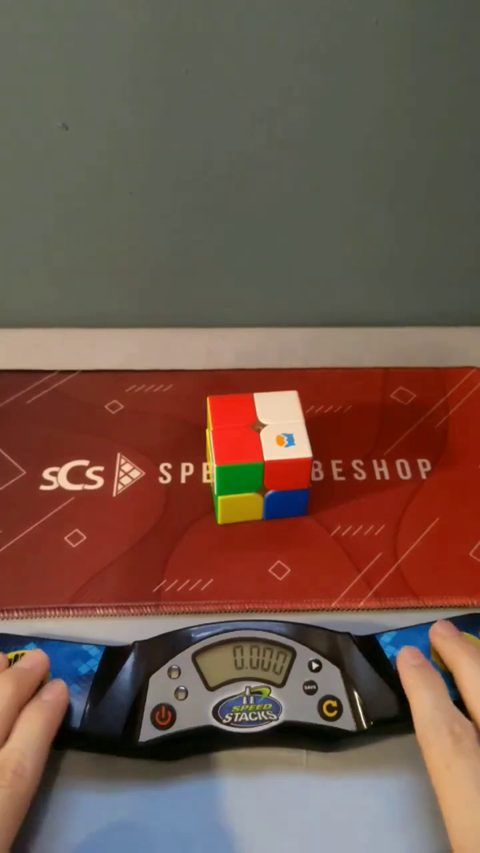
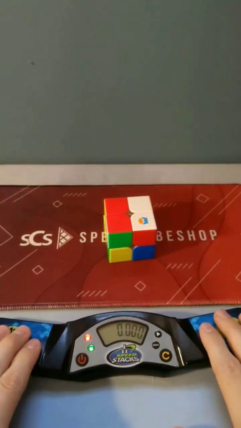
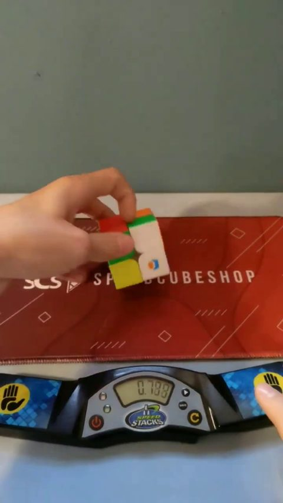
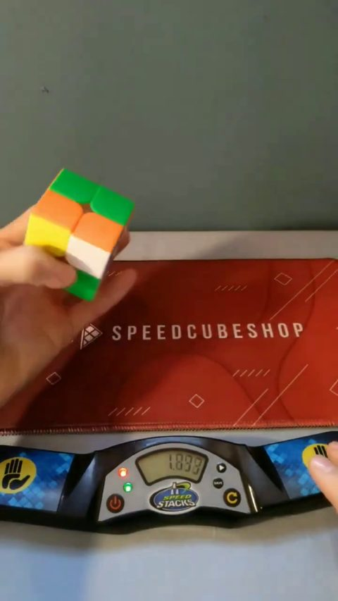
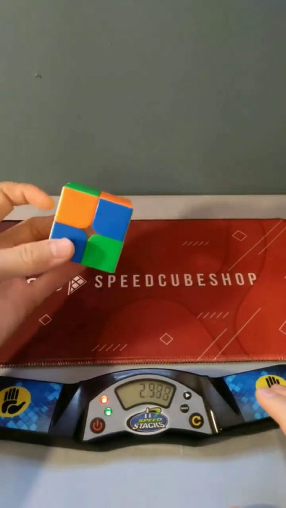
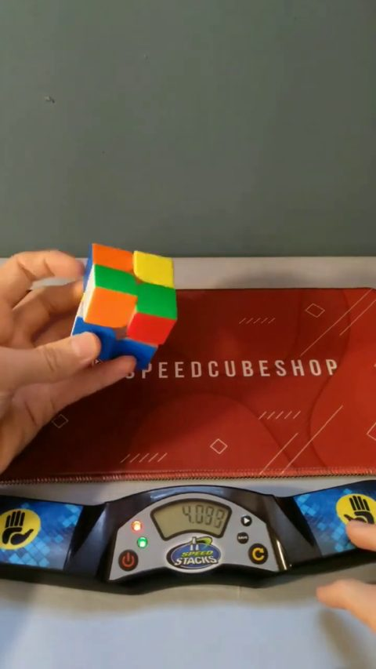
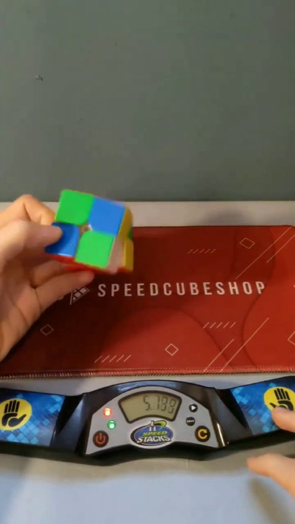
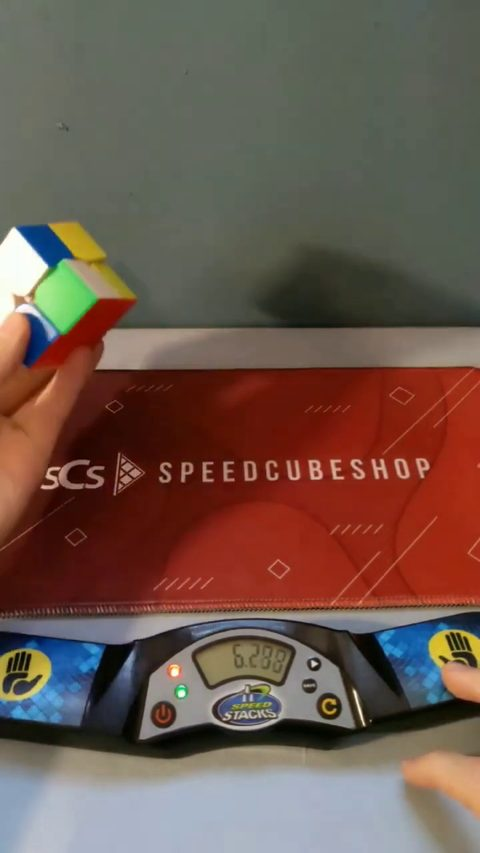
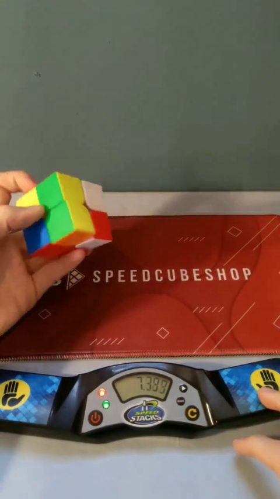
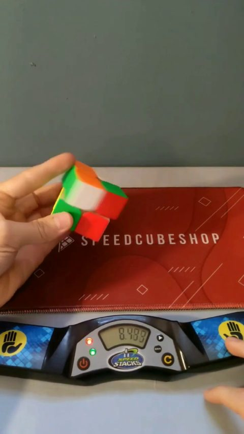
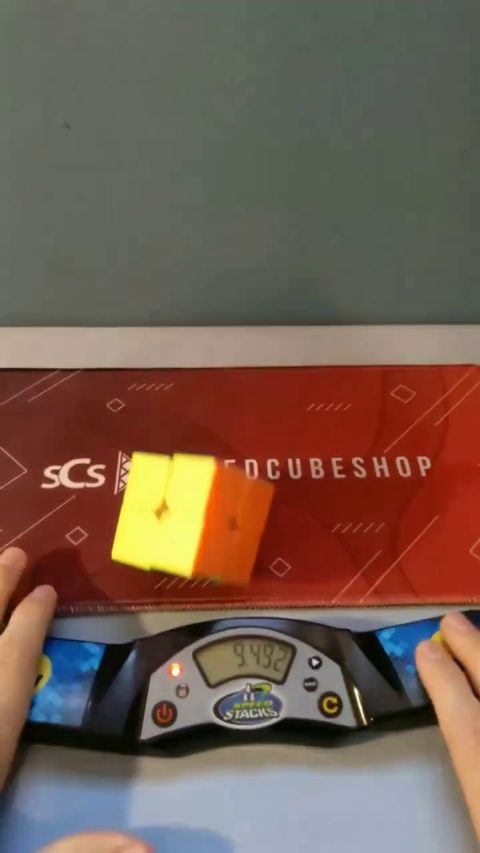
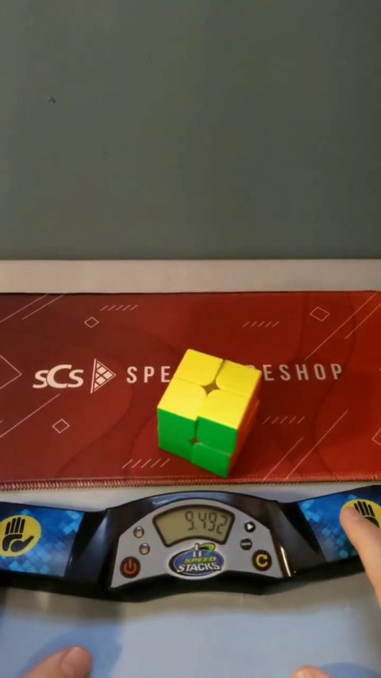
Documentation
Agent
● 2×2×2 Cube Solving running
- Research time
- 2h 46m elapsed · 2h 40m active measured
- Submissions
- 7 / 100 measured
- Simulator
- MuJoCo from agent log
- Methods
- CEMdomain randomizationbehavior cloningsystem identification
- Task progress
- agent-estimated 0.00 (s01)
Decision: fit dynamic surrogate parameters to s02 encoder traces while s03 evaluates. Also prototype a compliant eight-corner mechanism to represent out-of-axis jamming. Its first numerical test was unstable; it has not produced usable training results or policies.
Task progress
Only numeric estimates the agent wrote in its own log; SuperDex reports no scores, and official verdicts are not shown.
| Trial | Score | Time | Agent's statement |
|---|---|---|---|
| s01 | 0.00 | 16:13 | E001/s01 hold baseline: video inspection at 0,.2,.5,1,2,5,10,20,30,40 s shows retained cube, no visible layer turn. Estimated rubric score 0 (independent visual assessment, not target label). Joint tracking RMSE 0.0020–0 |
Evaluation history
measured submission and completion times from the SuperDex records. "done" means the trial ran, not that it succeeded.
| Trial | Submitted (EDT) | Finished | Execution | Video |
|---|---|---|---|---|
| s07 | 18:26 | 18:41 | done | video |
| s06 | 17:41 | 17:57 | done | video |
| s05 | 17:17 | 17:32 | done | video |
| s04 | 16:52 | 17:05 | done | video |
| s03 | 16:30 | 16:41 | done | video |
| s02 | 16:10 | 16:27 | done | video |
| s01 | 15:55 | 16:09 | done | video |
All published trial videos (7)
Research timeline
from agent log hypotheses, experiments, observations and decisions, newest first (sanitized excerpts of the agent's own research log).
- experiment · 16:13 EDT
L030: final R refinement frozen as research/candidates/post_u_rprime_v3.npz (5.5s), then validated sequentially from exact staged U+5s hold at t25, followed by R+2s hold at t32.5. All4 selected scenarios pass conservative<=5deg switches and physical limits. R endpoint4.02/.19/1.46/3.27deg; speedmax.833, offaxismax10.61deg. New F training uses those exact sequential end states. This remains a selected-face model prediction with <=5deg transition projection, not a target success.
- experiment · 16:13 EDT
L029: sequential local U(4.5s)+hold5s→Rprime(5.5s)+hold2s passes physical checks in4 selected grasp scenarios. R goals4.47/.46/3.05/6.36deg; speedmax.744, offaxismax11.55deg. Three pass conservative<=5deg face-switch approximation; fourth remains too misaligned for trusted switching. F training starts from the three valid model end states while refining the R transition. Existing s07 is still evaluating; no target U success yet.
- experiment · 16:13 EDT
L028: independent multi-frame camera calibration preserves leading s04 states. Final key0a130a160a0216 has loss.1176 vs next.1554; prefix key1313130b130216 loss.1372 vs U2 alternative.1796. This increases confidence but is not an official state label. Slowing subsequent R/F primitives to5.5s gives planned start27s, switch32.5s, finish38s,2s hold. Training now samples speed every1ms, rejects >.95speed ratio or >14deg off-axis, and caps alignment penalties so invalid physics cannot outrank valid non-turning behavior.
- experiment · 16:13 EDT
L027: alignment-weighted U refinement (not submitted) retains quarter turn in8 noisy20s-hold checks with max endpoint2.43deg, speed ratio.433, mechanism error7.57deg, drop6.81mm. Frozen research/candidates/ab_u_precision_v1.npz. Rprime training from four post-U hypotheses reaches~90deg in3/4, but2 exceed speed/deformation checks; not a validated composite. Single harder-case curriculum running. Multi-frame camera fit modestly improves hand silhouette and initial cube pixel loss .0962→.0946; separate camera hypothesis saved for state-ranking sensitivity.
- submission · 16:13 EDT
E007/s07: accepted22:26:21, policy ab_u_damped_v1 SHAe760aac0... . Exact s04 prefix15.5s; new Uprime4.5s;20s hold, filtered qd feedbackgain2 fromstep7750. Preflight and remotevalidate passed, meanact.005ms.7 submissionsused,93remain. Conditional expected state after successful turn is distance2, not a verified target result.
- experiment · 16:13 EDT
L026: candidate ab_u_damped_stage_v1 adds filtered encoder velocity feedback (gain2, alpha.2, targets clipped to published speeds). Independent fine-step validation with20s hold passes physical bounds and quarter-turn<10deg in6 noiseless cases, plus8 cases with documented velocity-noise sigma.05. Noisy maxima: goal error7.82deg, final1s error7.89deg, speed ratio.658, mechanism error11.69deg, drop6.67mm. Selected as a staged target probe of U-prime from exact s04 A+B prefix. Model checks do not establish target success.
- experiment · 16:13 EDT
L025: short U objectives admit metastable endpoints: after a20s hold, one nominal near90deg endpoint returns to~0deg. Training now includes5s hold and extra contact scenarios. Scalar quaternion kernel agrees with the previous SciPy torque computation to1.33e-15Nm across300 random cases, substantially reducing local compute overhead. No target progress claimed.
- experiment · 16:13 EDT
L024: matching the observed s04 R block with selected-face dynamics achieves a conditional -91.25deg turn but joint RMSE remains .0615rad and modeled off-axis error17.24deg. Added phalanx contact reduces joint RMSE to .0375rad; still uncalibrated. Full self-contact is unstable because the provided wrist/proximal meshes overlap~14mm at q0; reject that contact model. Palm-middle/distal pairs had no effect in this block.
- experiment · 16:13 EDT
L023: sequential test from two stable encoder-fitted grasps fails the first U-prime: net layer angles -0.85/+0.02 deg; one scenario subsequently drops. Old U controller does not transfer across these plausible grasps. Decision: retrain U from the actual prefix posterior and identify material dynamics using the observed clockwise R block. No new submission yet.
- experiment · 16:13 EDT
L022: fitted an aligned rigid-cube static surrogate to s04 encoder means over14.5–15.5 s. Best stable mean-joint RMSE .000242 rad, final linear speed .000186 m/s and angular speed .00768 rad/s. Several materially different poses fit similarly; treat these as posterior scenarios, not recovered target state. Re-running sequential validation from these physically supported grasps.
- experiment · 16:13 EDT
L021: mixed grasp/geodesic fine-tuning reaches U goal errors .43/.92 deg and F goal errors .24/1.50 deg, peak modeled off-axis errors <4 deg, and speeds below limits in independent primitive tests. However, sequential validation from literal image-derived grasp coordinates failed immediately (one drop, one excessive mechanism error). Rejected that initialization; did not submit the unvalidated sequence.
- experiment · 16:13 EDT
L020: exact conditional plan from the A+B state is U' R R R F in the physical lattice (five quarter-turns). Algebraically it solves all corners to common orientation index9, with blue on the top in the reference frame. With the evaluated 15.5 s prefix, 4.5 s U, 13.5 s observed R repetitions, and 4.5 s F, motion ends at38 s and allows2 s explicit hold. This is a hypothesis for physical validation, not target success.
- experiment · 16:13 EDT
E006/s06 result: completed 21:57:03 (15m24s). Cube retained and recorded joint speeds within limits, but final OWGG pattern does not show the intended net undo. Do not credit the simulated inverse R turn as a transferred skill. Decision: use three repetitions of the previously observed clockwise R-side motion as an alternative to a counterclockwise turn, and shorten the prefix to stop before the known unintended clockwise turn.
- experiment · 16:13 EDT
L019: inverse-R training improves both local scenarios; U and F face searches succeed in the easier scenario but stall in the higher-resistance one. Hypothesis: the narrow exponential endpoint reward and early variance shrinkage suppress exploration below the activation barrier. Decision: train the harder scenario separately with wider CEM variance and additional signed-angle/peak progress rewards, then test transfer across both scenarios. This is local algorithm tuning, not a measured target improvement.
- submission · 16:13 EDT
E006/s06: submitted correct_r_inverse_v1 (SHA 77e3d978...) at 21:41:40. Preserves the exact evaluated s04 commands for 20 s, then attempts a trained R-side counterclockwise correction over 4.5 s. Local 20 s hold tests end 88.88/88.89 deg in two fitted grasp scenarios, max off-axis 4.73/6.35 deg, max speed ratio .308, height drop <4.5 mm. A higher-resistance stress case retains the cube safely but does not turn. Both preflight and remote validate passed. Six submissions used; 94 remain. Expected effect under the leading reconstruction is to undo the unintended F turn, leaving three turns to solve and 15.5 s of available episode time for further corrections.
- experiment · 16:13 EDT
L018: full exact distance table enumerated 3,674,160 reachable canonical states through depth 11 in ~25 s, and validated the documented scramble inverse. White-sticker pixel ablation preserves the leading s04 state: key 0a130a160a0216, world orientations [9,5,1,5,0,5,3,0], conditional distance 4. At 12 s the leading state is one net U' from initial, conditional distance 3. This is consistent with a 90-degree whole-cube yaw plus U' in the opening macro, followed by a physical R-clockwise macro (which acts as initial-frame F after that reorientation). Applying those exact algebraic effects reproduces the final leading world state, not just its top palette. Occluded-corner alternatives remain; no official score claimed.
- experiment · 16:13 EDT
E005/s05 result: completed 21:32:20 (15m14s). Cube retained, final state visibly unsolved; final top palette RWYB differs from the required U2 pattern. All logged joint speeds below individual limits, maximum 3.07 rad/s. Discrete radius-3 image ranking has higher residual (.263) and a leading conditional distance 5; this is insufficient evidence for an exact target state. Do not use this rollout as a successful opening move.
- experiment · 16:13 EDT
L017: exact cube orientation algebra and breadth-first distance table added for independent symbolic checking of image-derived candidate states. Inverse U2 F' R and the public scramble geometry agree. Initial canonical distance is 3. Solver paths are expressed after fixing one reference corner; they must be transformed back before physical execution.
- experiment · 16:13 EDT
L016: new compliant selected-face surrogate uses a ball joint for the active four-cubie group, detent on the allowed axis and springs on the two forbidden axes. This makes off-axis deformation observable in training, but still assumes a selected active face. Nominal 40 s test of s05 ends 181.57 deg, max off-axis error 2.92 deg, max speed ratio .191, max centre displacement 12.0 mm. Stronger-resistance and static-equilibrium cases do NOT reliably turn (0 or 84 deg), although all retained low speeds and <6 deg deformation. Do not call this a robust target solution.
- submission · 16:13 EDT
E005/s05: submitted u_two_cycles_v2 (SHA 687d6f93...) at 21:17:06. New two-cycle-trained motion, 9 s then hold. Package now stores the offline action table: all 20000 commands bit-identical to the earlier interpolated policy; preflight mean .001 ms/max .058 ms, authoritative validate mean .004/max .015 ms. Five submissions used; 95 remain.
- experiment · 16:13 EDT
E004/s04: completed at 21:05:25, 13m21s. Cube retained in sampled frames through 40 s, final state visibly unsolved. Maximum logged speed ~7.98 rad/s; each joint remained below its speed specification in recorded samples. Exact shared q-target prefix vs s03: bit identical for 4500 steps; measured position RMS difference .002821 rad and velocity .07047 rad/s, matching independent encoder noise predictions sqrt(2)*.002 and sqrt(2)*.05. This supports repeatability of the underlying physical prefix. The late phase changes the visible top-face palette from B/O/O/W to O/W/G/G, demonstrating a change beyond simple U-face in-plane colour permutation; precise turn identities and rubric milestones remain under analysis. The intended F' phase did not visibly reach its expected colour pattern.
- experiment · 16:13 EDT
L015: two-cycle optimization now includes first-cycle and second-cycle layer angles and final base drift. A bounded 6-generation continuation gives local nominal final angles 180.47/180.17/181.54 degrees across the three contact assumptions. Some earlier long background jobs were terminated with SIGTERM; checkpoints preserved. No evaluation failure inferred from local process termination.
- experiment · 16:13 EDT
L014: free camera pose fit against known robot mesh, then initial cube pose fitting, produced another plausible projection (initial cube roll ~6.9 deg, yaw ~-10.7 deg; cube image loss .096). However, its 1 s hold prediction has .00211 rad mean encoder error, versus .000093 for the static-contact equilibrium pose. Treat the image-only initial pose as uncertain; do not replace the known spawn orientation or declare recovered target state. Refined s03 endpoint fits still give near-tied U2 and whole-rotation explanations (.147 vs .154 at 10 s).
- experiment · 16:13 EDT
L013: resistance sweep evaluated 54 model/placement/contact combinations with hinge friction .0005–.10 Nm and detent >=2.5*friction. Best joint RMSE remained .0105 rad (index–middle contact, low resistance, static-fit placement), while some stronger models predicted mostly whole-cube rotation. No unique parameter identification or target-turn diagnosis follows.
- experiment · 16:13 EDT
L012: physically constrained dynamic regression (detent >= 2*hinge static friction, plus initial hold encoders) achieved fitting loss 1.176, still above encoder noise. Fit centre [-.079965,.008303,.323219], friction .6429, hinge friction .001824, detent .004737 are non-unique model parameters, not measured target internals. Need broader turning-resistance hypotheses: current training friction/torque ranges may be too narrow and image-only face-angle estimates may confuse whole rotation.
- experiment · 16:13 EDT
L011: held-out contact-model benchmark on frozen one-cycle-trained candidates: positive-direction doubled cycle passed local U2 angle/height/speed checks in 18/24 cases, negative in 7/24. These tests do not establish full-mechanism validity or target success. Changed objective to evaluate two repeated cycles jointly, including each intermediate angle and final cube pose; first nominal three-contact-model candidates finish near 180 degrees in all three models.
- submission · 16:13 EDT
E004: submitted full_sequence_v1, preserving the exact s03 prefix then attempting the locally validated F'/R phases. Both package checks passed before submission. It is a full-sequence transfer experiment with acknowledged phase-snap/model limitations, not a demonstrated solution. Four accepted submissions used; 96 remain.
- submission · 16:13 EDT
E003/s03: completed at 20:41:36 (11m33s). Retained cube in sampled video throughout 40 s. Maximum logged speed 8.00 rad/s at ring PIP (limit 12.86); all reported joint speeds below their individual limits. Top colours change through quarter- and half-turn-like patterns, but this alone does not distinguish face turns from whole-cube reorientation. Sequential local image tracking failed (large image-fit residuals), so its numerical angles are rejected. Multi-start endpoint fitting gives competing hypotheses: at 10 s, whole yaw ~180 with U ~-21 degrees has loss .147; U ~159 with small whole rotation has .193. Occlusion, camera error, and local minima make this inconclusive. No verified task score or solving milestone is claimed. Earlier expectation that the contact models predicted failure is also unverified; do not label this episode a confirmed U2 success or failure.
- experiment · 16:13 EDT
L010: the same frozen s03 U2 trajectory ends near 176 degrees in the original model but near 7 / -2 degrees with index–middle / all-distal contact. This is a pre-feedback prediction of a possible target failure. Training now randomizes between no finger contact, index–middle distal contact, and all-distal contact. Both U directions have found local quarter-turn cycles in all three training models; repeat-cycle/held-out tests are running. s03 is still evaluating; no target complete turn or solve has been established.
- experiment · 16:13 EDT
L009: explicit index–middle distal contact reduced s02 joint RMSE over .3–4 s from .02864 to .01276 rad, while all distal pairs gave .02453. Adding all hand self-collisions is inconsistent with the initial pose and was rejected as a model. Dynamic fitting with the selected distal pair reduced the fitting loss to .869 (remaining mismatch still exceeds encoder noise). Its unconstrained estimate had static hinge friction greater than the detent torque, which contradicts the public released-layer settling behavior; do not treat that parameter set as calibrated physics. It is used only as a placement stress case with detent adjusted above friction.
- experiment · 16:13 EDT
L008: corrected the compliant mechanism's artificial net torque on its nearly massless central coordinate; hold is now numerically stable (1.4 degree maximum mechanism error after settling). The tested U2 trajectory produced no commits with the prototype unlock rule. This alternative mechanism is uncalibrated and not yet useful as a transfer test; its numerical stability is not a validation of its physical assumptions.
- experiment · 16:13 EDT
L007: R curriculum retraining now allows the phase-rebuilding surrogate to finish U2/F'/R at 177.73/92.62/-96.11 degrees, respectively. Built full_sequence_v1 (20 s motion then hold) and passed preflight/remote validate, but did not submit it while s03 is running. This sequence has not been demonstrated in the target.
- experiment · 16:13 EDT
L006: dynamic fit of the one-hinge surrogate to s02 joints reduced its scaled fitting loss from 6.09 to 3.73, but residuals remain well above encoder noise and the model is not validated. Added centre/friction/resistance/detent parameters; estimates remain non-unique. Investigating omitted inter-finger contact as one possible source of the large abduction errors.
- decision · 16:13 EDT
Decision: fit dynamic surrogate parameters to s02 encoder traces while s03 evaluates. Also prototype a compliant eight-corner mechanism to represent out-of-axis jamming. Its first numerical test was unstable; it has not produced usable training results or policies.
- experiment · 16:13 EDT
L005: phase-rebuilding surrogate completes U2 (177.73 deg) and F' (92.62 deg), but a separately trained R primitive fails from the resulting grasp (-1.25 deg vs -90 desired). Phase transitions snap the prior layer within a 10-degree alignment window; this is an explicit local approximation. Retraining R from the actual preceding local phase state, rather than claiming full-sequence success.
- submission · 16:13 EDT
E003/s03: submitted frozen u_double_v1 (SHA 834d2d9d...), two return-to-q0 cycles over 9 s then hold. Both preflight and remote validate passed. Nominal 40 s local result 175.41 degrees; after the initial 0.3 s settling period max joint speed 1.48 rad/s, max sampled contact force 4.06 N, centre height stayed >.3130 m. Held-out 12-case check ended within 10 degrees of 180 in 10/12 cases. Large apparent speed/force peaks in the earlier check occurred at the first integration step, due to initial penetration, not during policy motion; this initialization discrepancy is now tracked separately. Three accepted submissions used; 97 remain.
- submission · 16:13 EDT
E002/s02: completed in 16m44s; fetched video and all 20000 encoder steps. Visual review shows retained cube but no completed layer turn. Image-only, single-U-coordinate fits estimate a ~40.1 degree peak at 2 s and ~21.6 degrees at 40 s (fit loss ~.18 peak / .10 final vs ~.04 baseline; model/camera/occlusion uncertainty means these are not measured target angles). No verified >=45 degree milestone or completed turn. Maximum logged joint speed 1.40 rad/s; no speed-limit excess even without a noise margin. Large sustained abduction tracking errors indicate contact-blocked index and middle fingers. The screenshot-placement surrogate's final 21.53 degree prediction agrees approximately with the final image estimate; this supports further model fitting but does not verify mechanism fidelity.
- note · 16:13 EDT
Methods: added image-only coloured-sticker renderer and camera fit from the supplied screenshot; initial image-fit loss .0285/.0557 in two views. These fits are hypotheses for independent feedback analysis. Also generalized own one-layer surrogate to selectable face axes, and began F' primitive search. This ideal single-hinge model does not establish robustness to the target's full mechanism.
- experiment · 16:13 EDT
L004: hold-baseline contact fitting reduced own-surrogate mean encoder mismatch from .000850 to .000098 rad. Estimated initialization [-.07905,.00990,.31924] and friction .5005 are model-dependent, non-unique parameters; equilibrium pose differs from initialization. Do not label these as measured target object state or friction. Decision: retain screenshot-based placement and use this alternative in subsequent held-out checks.
- experiment · 16:13 EDT
L003: optimizing at screenshot-fitted placement gave local quarter angle 90.03 degrees, max centre motion 10.4 mm, maximum observed joint speed 5.36 rad/s. A return-to-q0 cycle initialized from it completed near 90 degrees in seven independent surrogate variants (initial check: 84.55–94.40 degrees). Domain variation: ±2 mm centre, friction .55–1.25, hinge friction .0002–.002 Nm, detent .001–.006 Nm, mass .85–1.15 times nominal. Training includes settling after returning to q0, retention, speed, and base-pose drift penalties. These are training-domain results, not held-out transfer or target success.
- decision · 16:13 EDT
Decision: submit this locally simulated trajectory once as a contact/transfer probe, while developing placement/friction robustness and video-based analysis. Package passed full local preflight (20000 actions, deterministic, 0.007 ms mean) and remote validate (valid, uncharged). Follow paper arxiv:1910.07113 for the domain randomization rationale; own surrogate follows official MuJoCo modeling docs. No claims of reproduced solving skill.
- experiment · 16:13 EDT
L002: rechecked existing quarter-turn trajectory for 40 s at screenshot-fitted centre [-.075607,.009798,.318856]. Final local layer angle 21.53 degrees, max centre motion 18.03 mm; this differs from L001's training placement and confirms transfer sensitivity. Do not interpret L001 as target success.
- submission · 16:13 EDT
E001/s01 hold baseline: video inspection at 0,.2,.5,1,2,5,10,20,30,40 s shows retained cube, no visible layer turn. Estimated rubric score 0 (independent visual assessment, not target label). Joint tracking RMSE 0.0020–0.0071 rad; maximum recorded speeds 0.19–0.23 rad/s are comparable to velocity noise. Baseline validates steady support.
- submission · 16:13 EDT
2026-10-21 20:13 UTC — resumed current workspace research and read all task documents, demonstration samples, target screenshot, and existing local code. API shows s01 completed, 99 submissions left. No target internals or other workspaces accessed.
- experiment
Experiment L001: CEM, 24 generations x 96 candidates, independent one-U-hinge MuJoCo surrogate, initial center (-.063,.015,.325), friction .9, resistance .0005 Nm, sinusoidal detent .003 Nm. Best released angle +89.94 degrees at 3.3 s, max center displacement 18.6 mm, max joint speed 7.23 rad/s. This is a local result only. Varying initial center by 5–13 mm reduced final angle to 42–49 degrees: transfer sensitivity is high. Decision: improve robustness before submission.
- reference
References: https://arxiv.org/abs/1910.07113 ; https://mujoco.readthedocs.io/en/3.8.0/modeling.html
- hypothesis
Hypothesis: bottom-layer support plus coordinated thumb/finger sweeps can generate isolated turns. This is unverified.
- decision
Decision: construct an independent MuJoCo surrogate from the provided URDF and mechanism specification. Start with a hold baseline, then kinematic finger trajectories and local optimization; compare target feedback videos and encoder residuals.
- note
Unknowns: cube placement coordinates, contact friction, layer resistance, target mechanism implementation.
- observation
Measured: no experiments yet, all 100 submissions available. Four NVIDIA L40S GPUs available.
- note
Target: fixed scramble R' F U2, inverse U2 F' R; 40 s; encoder-only policy; 100 submissions.
- note
Scope: provided task resources, robot assets, own simulation, documented r2s2r-cube API only.
- note
Autonomous cube manipulation research — 2026-10-21
- note
WARNING Wed Oct 21 22:16:25 2026: Nan, Inf or huge value in QACC at DOF 23. The simulation is unstable. Time = 0.2450.
- note
WARNING Wed Oct 21 20:28:59 2026: Nan, Inf or huge value in QACC at DOF 23. The simulation is unstable. Time = 0.0050.